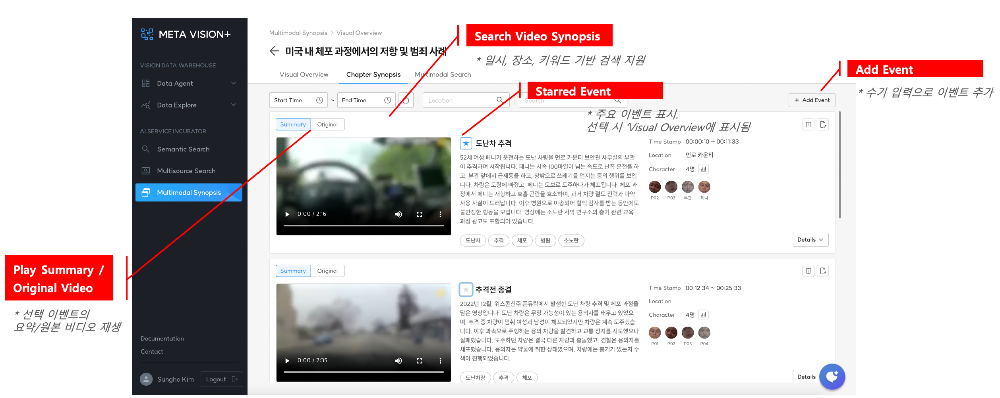
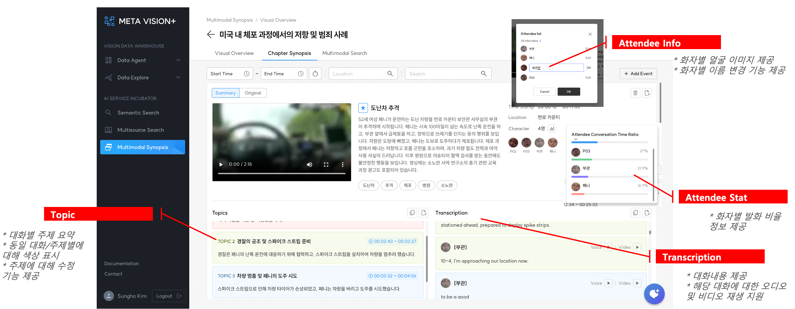

Chapter Synopsis¶
비디오에서 추출된 모든 이벤트 목록 및 상세 정보(토픽 및 대화록) 제공
1. 주요 기능¶
- 이벤트별 요약, 일시, 장소, 화자(Atttendee) 정보 제공
- AI가 생성한 이벤트 정보에 대해 수정 및 삭제 기능 제공
- 수기 입력으로 신규 이벤트 생성 및 삭제 기능 제공
2. 이벤트 요약¶
- Play Summary/Original Video: 선택 이벤트의 요약/원본 비디오 재생
- Search Video Synopsis: 일시, 장소, 키워드 기반 검색 지원
- Starred Event: 주요 이벤트 표시. 선택 시 ‘Visual Overview에 표시됨
- Add Event: 수기 입력으로 이벤트 추가

3. 이벤트 상세 정보¶
- Topic: 대화별 주제 요약
- 동일 대화/주제별에 대해 색상 표시
- 주제에 대해 수정 기능 제공
- Attendee Info: 화자 정보 제공
- 화자별 얼굴 이미지 제공
- 화자별 이름 변경 기능 제공
- Attendee Stat: 화자별 발화 비율 정보 제공
- Transcription: 시간순으로 대화내용 제공
- 해당 대화에 대한 오디오 및 비디오 재생 지원
